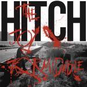

The Joy Formidable Hitch
(C'Mon Lets Drift/Caroline Records)
In every band's career, there comes a decision that has to be made about the best path forward. Do you continue to lean on the strengths that brought you success or do you take a risk and try something new? The Joy Formidable reached this fork in the road with Hitch. On their third record, the three-piece is not content to repeat themselves with just 11 blistering rock tracks. Instead, Ritzy Bryan, Rhydian Dafydd and Matthew Thomas introduce several new colors to their palette, while keeping the core elements intact. The result is a wonderful mishmash of styles and ideas.
Unfortunately though, Hitch starts this journey with a bump in the road. The first two songs, A Second in White and Radio of Lips, are the weakest on the album. Though they aren't bad by any means, with the former's rolling beat and the latter's string-laden breakdown, they don't stand out in any significant way. Not quite filler, but not the best way to capture an audience's attention.
Luckily, there's a quick course correction with The Last Thing On My Mind. One of the best qualities of The Joy Formidable is the camaraderie they show onstage and in their video logs. The Last Thing On My Mind shows that friendship through some studio chatter, before kicking into a breezy song with fuzzed-out guitars and a wall-shaking bass. It's a bit more laid back than what is expected from the band, but the groove is undeniably catchy.
Actually, on Hitch, The Joy Formidable give themselves and the listener far more space to breathe than on past records. Rather than a near-continuous rock fest, this album comes in waves, moving effortlessly between tempos and tones. For example, the aggressive roar of Running Hands With The Night is followed by prickling, light touches of guitar on Fog (Black Windows).
But the songs that really shine are those that find trio trying something new. Liana takes an elegant piano and builds on it with a dry, desert guitar that's right out of Muse's catalog. If Liana is a close-up look at the desert, then The Brook is a bird's-eye view, with a sharp guitar melody and plucked strings that envision endless sweeping over the Wild West. Next up, It's Started opens with a long segment of fanciful drum fills from Thomas. Once the guitar kicks in after 45 seconds, it's a killer riff that's among Bryan's best.
The Gift is another first, with subtle background horn work joined by fragile piano keys and an unexpected vocal from Dafydd. It's a great way to switch things up and his voice fits well for the serene track. Rather than respond with her own vocals though, Bryan lets her guitar do the talking, with an expressive, brilliant solo.
While Hitch may kick off poorly, it more than makes up for it by back-ending the tracklist with some of the band's best work. Underneath the Petal is a beautiful, mysterious number with an earthy acoustic vibe, piano keys that fall like raindrops and renaissance-inspired flute work. The closer, Don't Let Me Know, starts as a straightforward acoustic song, relying on the strength of the melody and the emotion behind Ritzy's voice. But two minutes in, the guitar drops out, pulsing synths bubble to the surface, and then a clamor of roaring instruments hit like an atom bomb. But rather than letting the eruption of sound continue unabated, the band pulls back and lets the synth line pull them into space. It's an incredible end that not only holds onto the trio's roots, but also pushes them forward.
By the end of Hitch, The Joy Formidable has opened itself to several new musical paths that will help them to keep growing and changing well into the future. Now, the excitement will come from more than just the adrenaline of heavy rockers. It will come from the anticipation of what's next.
11 April, 2016 - 04:29 — Joe Marvilli